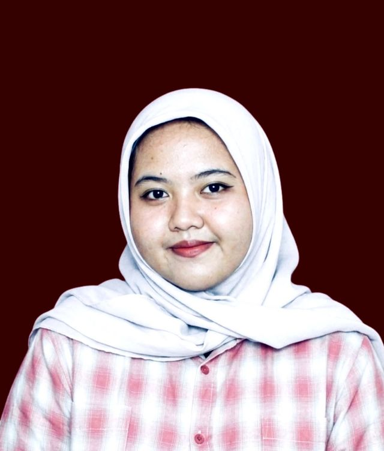
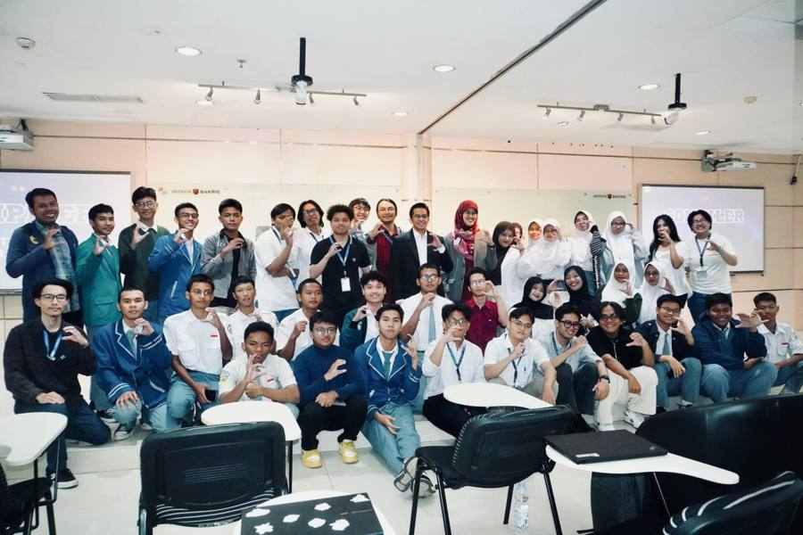
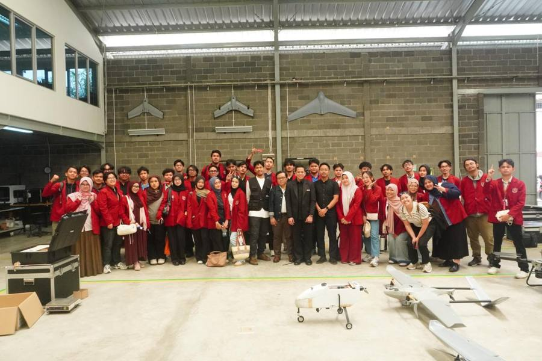
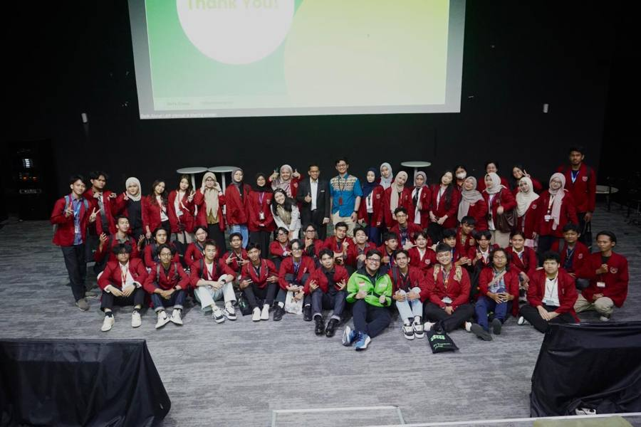
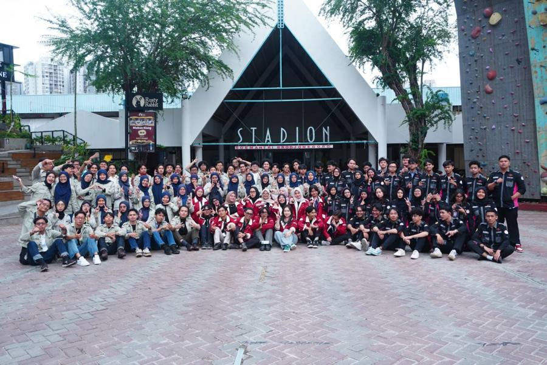
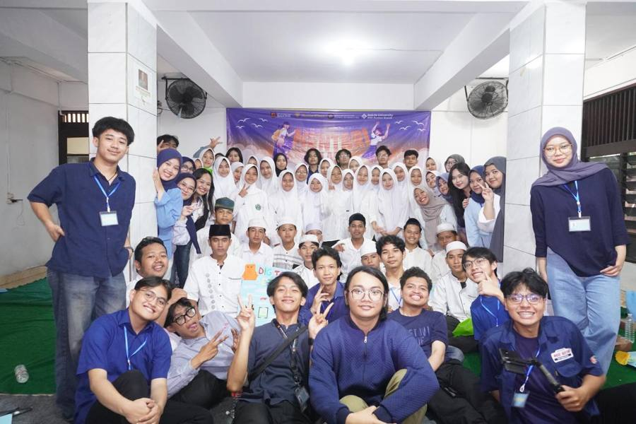
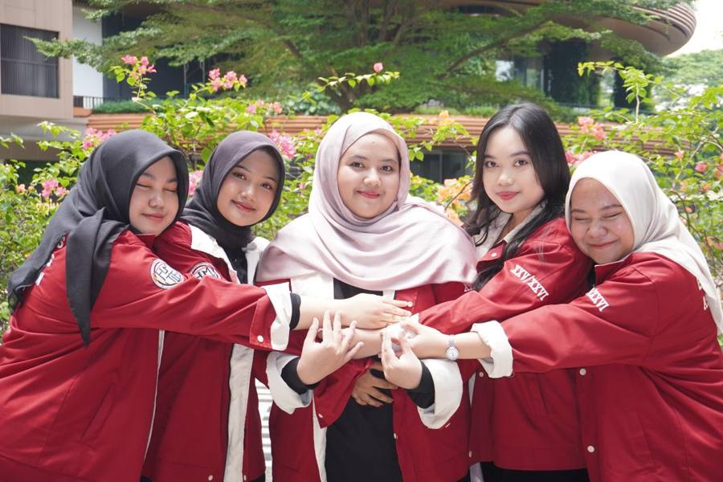

An Informatics Engineering student interested in data, analytics, and technology-driven projects.
I work across data analysis, web analytics, software projects, and project coordination. I like turning numbers into something people can actually use, and I enjoy running the projects around them too.

A bit about my background and what I study.
I am an Informatics Engineering student at Bakrie University with experience in data analytics, web analytics, and technology-driven projects. My work includes analyzing user data, identifying trends, preparing dashboard reports, and working with databases and software development projects.
I am interested in applying technology and data to support better decisions.
Selected coursework
Internships, teaching, and analyst work, newest first.
Course and team projects. Open a card for more detail.
Most of my project management experience comes from HMTIF, the Informatics Engineering Student Association at Bakrie University.






Grouped by what I use them for. The dots only show which group a skill belongs to, not a score.